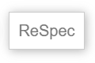
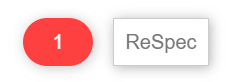
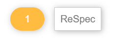

Finding people to write technical specifications is challenge enough, and the last anything wants when
taking on this kind of task is to be overwhelmed by the process of managing the documents. To help make
the process as smooth as possible, DAISY uses two widely implemented tools to help authors and editors
navigate the ins and outs of specification work: ReSpec and GitHub.
ReSpec is a tool that lets authors and editors focus on writing the text — it takes care of
formatting the document. Consequently, the only thing you have to know to write DAISY specifications is
some basic HTML. This guide introduces ReSpec and explains its authoring conventions.
GitHub is a content management system (CMS). Although commonly associated with coding projects, CMSes
provide a convenient way to author documents. The full authoring history of documents is always
available, for example, so you never have to worry about making mistakes. They are easily undone. GitHub
also allows others to review your changes before they are merged into a document.
Using GitHub can be a little more challenging than using ReSpec, but there are many user tools available
that can hide the technical details. This guide focuses on the underlying commands to help you
understand what happens at each stage of the process but is expected that you will use one of the
available tools to simplify the process.
2. ReSpec
2.1 Introduction
ReSpec is a JavaScript tool developed by the W3C to make editing their specifications easier and more
consistent. The code allows you to focus on writing the content of the specification, while it takes
care of adding common boilerplate and formatting when the document is viewed live.
Although developed for W3C, ReSpec is no longer exclusively for developing W3C specifications. DAISY,
for example, customizes a "base" profile to format its specifications and notes.
The functioning of ReSpec is meant to be largely transparent to anyone editing specifications. Using
the tool only requires a script tag to call in the ReSpec code and a block of JSON metadata to
initialize it. Once these are set, editors will primarily be working in HTML to author the content.
This means you can use whatever HTML editor you are most comfortable with.
This section covers the setup and initialization of ReSpec. Information on how to tag HTML documents
to take advantage of ReSpec's built-in formatting is covered in the next section on editing.
Note
For detailed information on all aspects of ReSpec, please visit the ReSpec Documentation.
2.2 Configuring a specification
Note
Configuring a ReSpec document for the first time is typically done by DAISY staff. You can skip
this subsection if you are not interested in how the code is set up.
2.2.1 Adding the code
The ReSpec source code is hosted at https://www.w3.org/Tools/respec/respec-w3c
To call in this code, you only need to add a script tag to the HTML header.
Note the use of the class attribute value "remove" on the
script tag. This class ensures that ReSpec will remove the script
tag (i.e., itself) when exporting a static version of the specification for publication.
ReSpec uses JSON metadata to initialize. This metadata is normally embedded in the
head of the HTML document using a script tag. Although it is
possible to import the metadata, doing so is not recommended. When stored outside the
specification, the metadata is often forgotten and not updated.
The script tag must contain a respecConfig variable definition, which
in turn must be an object. They key/value pairs in this object define the intialization
parameters.
The initialization metadata controls such aspects of the document as the links at the top of the
document (current version, previous version, etc.), the lists of editors and authors, etc.
Setting the various metadata properties goes beyond this tutorial, however. Refer to the ReSpec Documentation for more information.
2.2.3 Confirming the ReSpec setup
Once the ReSpec code and initialization metadata are set, all you need to do to verify the setup
is open the document in a browser.
Note
Although you can open a ReSpec document on your local file system by double-clicking it, it
is often better to use a server like Apache or IIS to serve the document. If your
specification uses ReSpec file includes, for example, these will only work from a
server.
If the configuration is successful, you will get an HTML document with a table of contents on one
side and a ReSpec button positioned at the top left.

If the ReSpec button is present, there is nothing else you need to do but reload the document to
view your changes as you go. If you click on the ReSpec button, it only provides options to
export the specification (for publication) and to search for references.
If the ReSpec button is missing, then initialization failed. In this case, check the browser's
JavaScript console (in the browser tools) for more information. The most common problem is
invalid JSON in the initialization metadata (e.g., a missing comma).
2.3 Errors and warnings
ReSpec will alert you to any errors and warnings it can detect.
For errors, a red oval button with a number indicating the number of errors will appear beside the
ReSpec box at the top of the document.

Click on the oval to get a list of errors.
Warnings are the same, but the indicator is a yellow oval.

Make sure all errors are fixed. Not all warnings need fixing but they need to be evaluated on a
case-by-case basis.
3. Editing
3.1 Sectioning specifications
3.1.1 Using sections
Section tags are an important part of structuring a specification, and you must author DAISY
specifications using section tags around each self-contained section of
content.
Every section tag should contain a unique ID in its id attribute.
Although ReSpec will add IDs if they are missing (with the value match the heading), relying on
this feature is strongly discouraged. If you later change your title, for example, links to it
will break if you rely on ReSpec's dynamic identifying.
The section tag is also used to differentiate informative content from normative content, as
described in more detail in the next two subsections.
In addition, every section must have a heading. Ensure that the number of heading tag matches its
nesting. The top-most sections in a specification must have h2 headings – ReSpec
uses h1 for the document title.
Note
ReSpec will attempt to correct misnumbered heading tags.
Use sentence case for headings — only the first letter is capitalized unless there are also
proper nouns in the title.
Do not add numbers your headings (e.g., "<h2>1. …</h2>"). ReSpec will
add the correct numbering based on whether the content is preliminary, body, or back matter.
Note
If a heading occurs without a section tag, ReSpec will attempt to add one to
match what it infers to be the correct structure (usually by making a subsection). Be
careful about relying on this kind of auto-correction.
3.1.2 Normative sections
All specifications are composed of normative and informative sections. Normative sections include
the requirements the author, reading system, etc. must follow.
In DAISY specifications, all sections are normative by default. You do not need to specially mark
these sections as normative.
Normative sections are composed of one or more requirements. These requirements must be
identified by special keywords identified in [rfc2119].
These keywords include:
MUST, MUST NOT, and REQUIRED – if the target
of the statement (content, reading system, etc.) does not meet these requirements it is
non-conforming
SHOULD, SHOULD NOT, and RECOMMENDED – the target
of the statement should only deviate from these requirements if there is a good
reason
MAY and OPTIONAL – meeting these requirements is at the
discretion of the author or developer.
Note
DAISY specifications should not use keywords SHALL and SHALL NOT. They are equivalent to
the "must" keywords and only add confusion.
Normative keywords must be in uppercase. Lowercase keywords have no normative weight, but it
best to avoid these as they confuse most readers.
3.1.3 Informative sections
Informative sections are for explanatory or illustrative content. They must not contain normative
statements and should avoid the lowercase equivalents (confuses readers whether the section is
misidentified as informative).
Informative sections must be identified by adding an "informative" class to them.
Be careful how you use the informative class. It applies to the section it is added to as well as
any subsections that section contains. Marking an entire introduction informative, for example, could incorrectly result in the conformance section and terminology
section becoming informative.
Note
Examples and notes are always considered informative – no special marker is needed.
3.2 Preliminary matter
3.2.1 Title and subtitle
The title of the specification is specified in the document's title tag.
ReSpec automatically generates an h1 in the body using the same value.
You can add an h1 tag with the id "title" to the body if you need html
tags in the title, but this is rare.
To add a subtitle, include an h2 tag with the id "title".
Note
Do not place the title and subtitle inside section tags.
Subtitling specifications is usually rare. Use an abstract to
describe the specification.
3.2.2 Copyright
ReSpec will automatically add a W3C copyright statement if one is not provided in the document.
To avoid this behavior, add a DAISY copyright statement after the opening body tag.
Note
If the document has a title or subtitle in the body, the copyright can proceed these
tags.
3.2.3 Abstract
ReSpec requires every document have an abstract that briefly explains the document.
To add the abstract, include a section with the id "abstract".
Note
Do not add a heading for the abstract. ReSpec will automatically add one.
The abstract should only be a few sentences at most. Leave longer explanations for an
introductory section.
If you are writing a document that does not need an abstract (e.g., a note), you can suppress the
section by adding the html hidden attribute. Removing the table of contents entry
requires scripting, however. Contact DAISY staff to help with this task.
3.2.4 Status of this document
DAISY specifications do not include status sections. Do not include a section tag
with the id "sotd" as this will trigger ReSpec to include W3C boilerplate.
Note
There is no way to overwrite the W3C boilerplate. ReSpec will append any text you write in a
status section after the boilerplate.
If DAISY specifications add status sections in the future, a new method for including them
will be developed.
3.2.5 Table of contents
ReSpec automatically generates the table of contents from the heading structure.
How many levels deep the table of contents go can be controlled by the initialization metadata, but it is best not to limit user access.
Individual sections can be omitted from the table of contents by adding the class
"noTOC" to them.
Note
You cannot use the noTOC class to suppress required sections, like the abstract.
3.2.6 Introductions
DAISY specifications should include an introduction section to group any additional preliminary
matter.
Do not mark the introduction as informative unless all the subsections it contains are also
informative.
The following sections explain the most common subsections found in the introduction, but you can
add any additional explanatory subsections you need.
3.2.6.1 Overviews and Backgrounds
An overview section provides you the opportunity to informatively describe the purpose, scope
and features of the specification in more detail than the abstract
allows. It is generally recommended to always include one in DAISY specifications.
Make sure mark the overview as informative.
DAISY specifications may also contain background sections, although these are not common. A
background section differs from an overview in that it delves into the problems that led to
creating the specification, for example, or outlines how the specification is a response to
previous efforts. The background should typically follow the overview.
3.2.6.2 Conformance
DAISY specifications must have a conformance section. This section should go after the Overview.
You should not include any text in the conformance section or give it a heading. ReSpec will
automatically populate the required text.
If you do add content to the section, ReSpec adds it after the boilerplate it generates.
Note
If you are writing a informative note, not a specification, omit a conformance section.
ReSpec will emit a warning but this can be ignored.
3.2.6.3 Terminology
If your specification uses terms that need defining, add a terminology section in the
introductory material. This section typically follows the conformance section.
Within the terminology section, add a definition list (dl tag) to define the
terms.
Each dt must include a dfn tag around the term. This allows ReSpec
to harvest the terminology and simplify linking to terms.
Never include normative requirements in a terminology section! Users do not expect to find
implementation details in definitions. Add requirements to a section most applicable to the
term.
Note
Terminology is always considered a normative part of a specification even if it does not
contain normative requirements. Do not mark the section as informative.
Once a term is defined, you can reference it from an a tag anywhere in the
document. You do not have to include a href attribute.
Only the first instance of a term in a new section is linked to its definition.
ReSpec can handle differences in case between the link text and the defined term. It can also
account for most plural forms of words.
If you intend to use a shorthand expression of the term (e.g., "reading system" instead of
"eBraille reading system", you need to define the alternative in the term definition using a
data-lt attribute.
If there is more than one alternative, use a vertical bar (|) to separate the
terms in the attribute.
3.3 Body matter
3.3.1 How to write the body
Probably the toughest problem you will face when writing a specification is how to structure it
and what to write about.
Although there is no simple answer to how to write a specification, the best way to begin the
process is often to brainstorm a list of topics that you expect you will have to cover. Start by
coming up with a list of top-level concepts or technologies you expect to define and then work
at refining this list by filling in the subsections.
Do not worry about getting this initial outline perfect … finished specifications almost
never look anything like they did at the outset. You will only discover what you ultimately need
to add and how to arrange the information as you go.
Once you have an outline of topics, a useful next step is to think of a specification as a
teaching guide. You need to introduce your readers to the concepts in a logical sequence that
allows them to build on the aspects they have already learned. Try arranging your outline so
that readers do not depend on understanding concepts that are only explained later.
Finally, do not feel compelled to fill in a specification from top-to-bottom. Begin wherever you
feel most comfortable and work your way through. Some parts will be much easier to write than
others and will require less input from the group. Getting some easy wins will make the process
more rewarding than struggling with harder parts just because they come first.
Note
The rest of this section deals with writing conveniences provided by ReSpec.
3.3.2 Writing guidelines
Use the following guidelines when writing DAISY specifications:
Use US English spelling
Follow the Chicago Manual of Style grammar and formatting rules
Do not use contractions (don't, can't, etc.)
Do not use personal pronouns (I, we, you, etc.)
Write out acronyms the first time (except where the acronym has become an accepted word,
like HTML)
Do not use colloquialisms - assume an international audience
Prefer active voice ("Authors must …", "Reading systems must …"), but passive
voice is acceptable for specification writing
3.3.3 Cross-references
To cross-reference another section in your specification, use an a tag that
references the ID of the section.
If you do not put any text in the a tag, ReSpec will automatically add the number
and title of the section. (You can also use ReSpec's triple bracket shorthand for referencing
sections this way: [[[#id]]].)
3.3.4 References
3.3.4.1 To other specifications
When referencing elements, attributes, definitions, concepts, etc. another specification, you
must cite the specification.
ReSpec supports a shorthand syntax for specification references using two brackets on either
side of the specification's shortname: [[shortname]]
To find the shortname to use for a specification, go to https://specref.org (there is also a link to this page from the ReSpec button).
Specification references may be normative or informative. References inherit this designation
from the type of section they are in.
If informative references are used in normative sections, you must mark the reference as
informative by adding a question mark before the shortname.
Normative references are not allowed in informative content.
ReSpec automatically builds a references section in the back matter and sorts the references
into normative and informative subsections.
3.3.4.2 To elements and attributes
ReSpec also has a shorthand for linking to elements in other specifications using a bracket
and circumflex around the element's name: [^element^]
To reference an attribute, you typically add a slash after the element's name:
[^element/attribute^]
Note
ReSpec replaces the attribute shorthand with the attribute's actual name. In the previous
example, only "The src attribute" will appear in the rendered text.
Element and attribute shorthands are only available for HTML and SVG.
If you are unsure what shorthand to use, or are getting an error, go to https://respec.org/xref/ and make sure you have the
correct reference.
If more than one specification defines an element or attribute, you may need to tell ReSpec
which one you mean to reference by adding a data-cite attribute. The value of
this attribute is the same shorthand name you use to reference the
specification.
3.3.4.3 To concepts and definitions
Concepts and definitions are defined in dfn tags.
ReSpec has a shorthand for referencing these using a bracket and equals sign around the term:
[=term=]
Concepts can be defined either in the current specification or in another, like [infra] or
[url].
3.3.5 Adding notes
There are two main types of notes:
Regular notes
Regulat notes are like asides … they are used to informatively describe issues to
readers.
To add a note, use the class "note".
You can also add a descriptive caption using the title attribute but this is
not commonly done for notes.
If a note is only a single paragraph, you can use the note class directly on
the paragraph tag. The one downside of this approach is that it makes notes slightly
hard to spot visually when editing (the extra div wrapper makes the
paragraph stand out from any others around it.
Editor's notes
Editor's notes inform readers about issues that are still to be addressed in the
specification.
To add an editor's note, use the class "ednote".
Note
Editor's notes are only allowed while you are working on the specification. They must
be removed prior to final publication.
3.3.6 Adding examples
To add examples, use an aside tag with the class "example".
Use the title attribute to add a descriptive caption for the example. It is strongly
recommended to title examples to make it easier for readers to understand their purpose.
Use <pre> and <code> tags to wrap the example markup.
Note
Make sure to escape opening brackets in the example.
If necessary, you can add a more thorough description of the example using <p>
tags.
ReSpec will automatically number examples.
3.4 Back matter
3.4.1 Adding appendixes
Marking a section as an appendix changes its numbering to alphabetic and signifies it is in the
back matter.
To indicate a section is an appendix, add the class appendix to its
section tag.
Appendixes are not informative by default, but they are typically used for informative content.
An informative class must be added if the appendix is not normative.
Appendixes must be the last sections in the document. ReSpec will convert all sections after the
first marked as an appendix to appendices, whether you wanted them as appendixes or not!
3.4.2 Change log entries
ReSpec currently does not help you out with change logs.
Change log entries should be dated and provide a concise description of the change. Best practice
is to also include a link to the github issue for each entry.
A change log may not be needed for a new specification, but can help readers track changes since
the last publication.
3.5 Custom styling
Although ReSpec provides a default look and feel, it does not cover everything you may need when
writing a specification.
To use custom styling, simply add a style tag to the document header with the necessary
css.
Do not change the appearance of specifications just because you do not like the ReSpec defaults!
Limit custom css to unhandled needs.